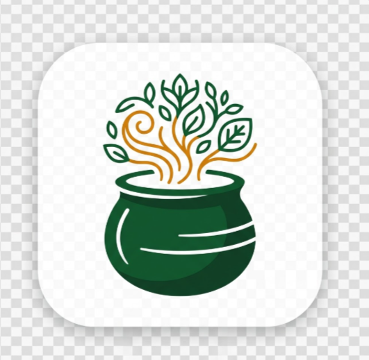
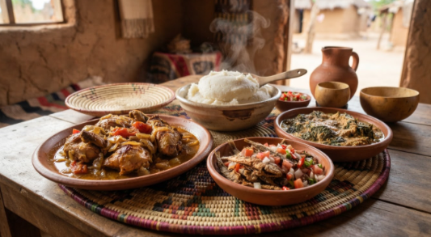
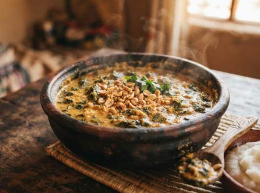
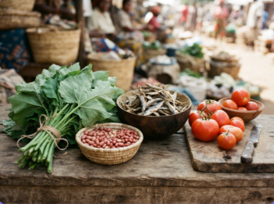

Thirty-three live screens in five rows: first-launch onboarding, the core experience, each contribution flow from entry through publication, then the profile collections and settings. Every frame is tappable on its own.
Photography is yours where you supplied it; striped blocks mark where real photos still need to drop in.


Ifisashi is what Zambian cooking does with what the land gives: greens from the garden, groundnuts from the field, and nothing else it does not need. There is no oil in the traditional version. The fat comes out of the pounded groundnuts themselves as the pot simmers.
The name is Bemba, but the dish is eaten in every province, and the greens change with what is growing. Pumpkin leaves in the wet season, cassava leaves in Luapula, bondwe wherever it comes up on its own. It is served with nshima and eaten by hand.
Households guard their own proportions. How coarse the groundnuts are pounded, whether tomato belongs in it at all, whether soda goes in to hold the colour of the leaves. These are the details that make one family's ifisashi recognisable from another's.

The dish at the centre of every Zambian meal is younger than most people assume. Maize arrived in this part of Africa through trade, and for a long time it sat alongside older grains rather than replacing them.
Before maize, the staples were millet and sorghum. They were pounded, sifted and stirred into a thick porridge by the same method still used today: water brought to the boil, a thin gruel made first, then more meal worked in with a wooden mwiko until the mixture pulls away from the sides of the pot.
What changed was the grain, not the technique. Maize gave a higher yield and a whiter meal, and through the colonial period it was actively promoted over the older grains. Within two or three generations it had become the default, and nshima came to mean maize nshima specifically.
Cassava followed a similar path in the north. In Luapula and Northern Province, nshima made from fermented, sun-dried cassava flour is the everyday version, and maize is the visitor. The name stays the same; the flour, the colour and the taste do not.
This is why the archive records nshima as a family of dishes rather than one recipe. What is constant is the method, the mwiko, and the fact that it is never eaten alone.